DeskPartner
Пиксельная кошка для рабочего стола Windows. Живёт на краях экрана и рамках окон и не мешает работать.
Гуляет по окнам, ест, спит и обижается, если её будить. Смотрит с вами кино, а на созвонах прячется. Гоняется за пиксельной мышью и играет с клубком.
Скачать
Windows 10 и 11 · бесплатно для некоммерческого использования
Что она делает
-
Ест Проголодается – ждёт у миски. Не покормите – уйдёт искать еду сама.

-
Спит Устала – сворачивается калачиком. Отошли от компьютера – уснёт сразу.

-
Обижается Разбудили недоспавшую – сначала вялая, потом шипит, а там и уйдёт за край экрана.

-
Смотрит кино Включили фильм – садится в угол и смотрит с вами. На созвонах прячется.

-
Охотится По окнам бегает нарисованная мышь, кошка гонится за ней до самого края экрана.

-
Играет с клубком Иногда выкатывает клубок из-за края экрана и гоняет его по полу.

Приватность
- Видит только рамки окон, заголовки и содержимое не читает.
- О созвоне узнаёт по занятому микрофону или камере, но звук не записывает.
- Из ваших данных в сеть уходят только дата и язык. Ни счётчиков, ни аналитики – и на этом сайте тоже.
Отзывы
Что понравилось, что мешает, чего не хватает – напишите, это читают. Аккаунт не нужен.

Форма скоро появится.
А пока кошка просто ждёт, когда её погладят.
Нашли баг? Есть аккаунт GitHub – напишите в Issues.